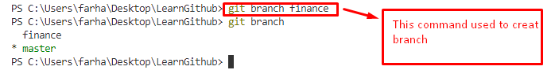

Learn How to Use Github
There ara some steps to use Github
Run the Command "git init":
Through this command initialize Repository in system locally
Run the Command "git status":
Through this command you check the lastest changes in your code
Run the Command "git add file name OR git add .":
By using "git add file name" like (git add index.html) you can add only this file
By using "git add ." like (git add .) you can add all files
Run the Command "git commit -m "Massaage"":
This command is used to commit your recent work and save with this name
Run the Command "git log":
This command is used to see all comments
Run the Commands:
git remote add origin and attach your github link
git push --set-upstream origin master
This command is used to see all comments
Wait
All above commands is basic , through these command you upload your file on github directorary.Now we see others commands
Run the Command "git diff index.html":
This command is used to see the difference in your local file and online repository file
Run the Command "git branch":
This command is used to see the all banches
Run the Command "git branch with branch name":
This command is used to make the branch with your desired name

Run the Command "git checkout with branch name":
This command is used to switch the branch on giving name
Run the Command "git merge with branch name":
This command is used to merge the braches which you input and which you have switched
Run the Command "git branch -d branch name":
This command is used to delete your desired branch name .